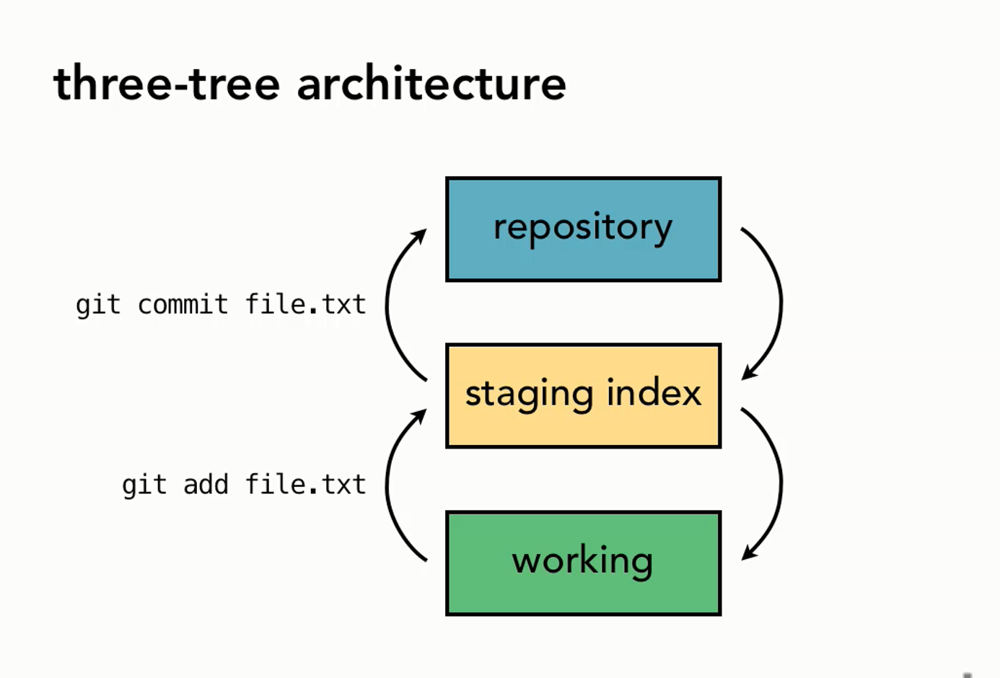
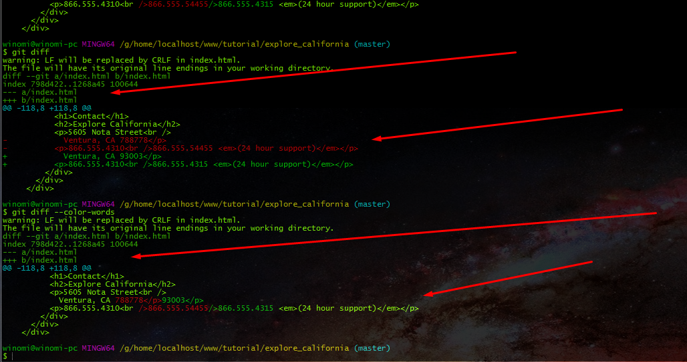
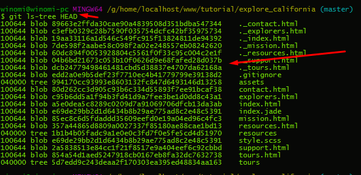
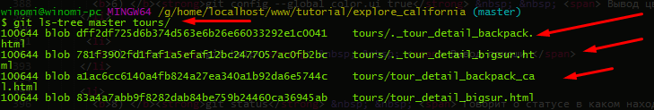
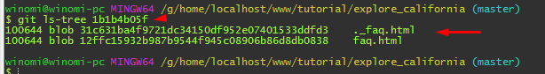
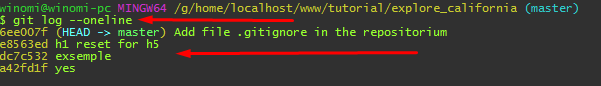
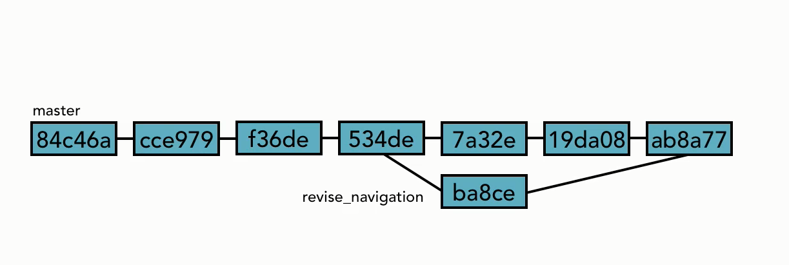
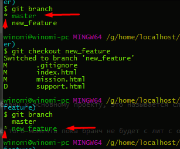
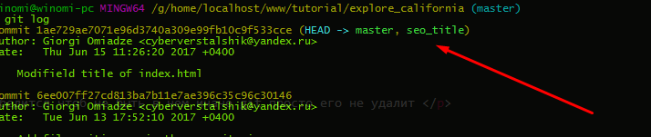

Git init
Git add * при первом разе нужно звезду потом можно и точкай
Git commit -m "" (Важно чтоб были такие кавычки)
Git remote add origin тут можно любое названия например git5 https://github.com/CyberFrontEnd/git5.git
git push -u origin master там где origin ствавим имя (git5) а там где master ставим имя ветки (master поскольку phpshtorm автоматически создает ветку)
Git - это ПО, которое отслеживает изменения, сделаные вами в файлах и директориях, в частности, оно очень хорошо отслеживает текстовые изменения, итак, пример: у нас есть
документ и он версия номер version 1 вы слелаил в нем какоето изменения и он уже версия version 2 и еще изменения версия version 3 и,т,г.
Он позволяет перемешатся между этими версиями, чтобы сравнить их и понять какие изменения были сделаны в них, то что он делает это "называется управлением версиями", Git
представлен нам как система контроля версиями Version control system (VCS) главная цель управление исходным кодом или Sourse code management (SCM).
Все работает как в Photoshop история передвигаясь верх вниз .
В классическом обычном сценарии в репозитории git есть три типа объектов — файл, дерево и коммит.
Файл есть какая-то версия какого-то пользовательского файла, дерево — совокупность файлов из разных поддиректорий, коммит — дерево + некая дополнительная информация (например,
родительский(е) коммит(ы), а также комментарий).
В репозитории иногда производится сборка мусора, во время которой устаревшие файлы заменяются на «дельты» между ними и актуальными файлами (именно так! актуальная версия файла
хранится не-инкрементально, инкременты используются только для шагания назад), после чего данные «дельты» складываются в один большой файл, к которому строится индекс.
Это снижает требования по месту на диске.
Репозиторий git бывает локальный и удаленный.
Локальный репозиторий — это поддиректория .git, создается (в пустом виде) командой git init и (в непустом виде с немедленным копированием содержимого родительского удаленного
репозитория и простановкой ссылки на родителя) командой git clone.
Практически все обычные операции с системой контроля версий, такие, как коммит и слияние, производятся только с локальным репозиторием.
Удаленный репозиторий можно только синхронизировать с локальным как «вверх» (push), так и «вниз» (pull).
Наличие полностью всего репозитория проекта локально у каждого разработчика дает git ряд преимуществ перед SVN.
Так, например, все операции, кроме push и pull, можно осуществлять без наличия Интернет-соединения.
Очень мощной возможностью git являются ветви, реализованные куда более полно, чем в SVN.
Создать новую ветвь так же просто, как и совершить коммит.
По сути, ветвь git есть не более чем читаемое человеком имя, «навешенное» на некий коммит в репозитории (используется поддиректория refs).
Коммит без создания новой ветви всего лишь передвигает эту ссылку (какую "эту ссылку"?) на себя, а коммит с созданием ветви — оставляет старую ссылку на месте, но создает новую
на новый коммит, и объявляет её текущей.
Заменить локальные девелоперские файлы на набор файлов из иной ветви, тем самым перейдя к работе с ней — также тривиально.
Также поддерживаются суб-репозитории с синхронизацией текущих ветвей в них. Имя ветви по умолчанию: master.
архитектура состоит из трех деревев 1) workind (рабочая среда) 2) bufer 3) repositori можно перенести в буфер а потом в все вместе в закомитить и перенести в репозитори 
команда git add отправляет файл в буфер далее git возьмёт этот набор изменений и перенесёт в repositorium через команду
git commit теперь он уже в репоситории
Есть три места где сохраняется база конфигурации и они оприделюят как широко будет применятся конфигурация
1) и самоя большая это на уровне системы "System" настройки по умолчанию находятся они Files/Git/etc/gitconfig далие
2) второе места для сохранения это на уровне опльзователя User оян применяются к отдельным пользователям в папке $HOME\.gitconfig
3) третья где мы можем хранить настройки для каждого отдельного проекта Project для каждого проекта применимы к конкретно проекту настройки my_project/.git/config есть команды
для всех трех настроек команда git config а затем модификатор --system говорит на каком уровне будем делать модификацию а затем идет сама настройка захотим сделать
1) system: git config --system
2) User: git config --global
3) Project: git config // если нет модификатора то это для отдельного проекта
Настраиваем Глобальную конфигурацию global мы говорим git config --global (патом настройка) user.name "Giorgi" // enter и будет добавлено в конфигурационный файл
Добавляем емаил git config --global user.email "cyberverstalshik@yandex.ru "
команда git config --list
а если хотите посмотреть конкретную настройку то вызывается так git config user.name (email, и,т,г)
Для вывода файла набираем каманду ls(как dir) -la(показать скрытые файлы) получаем директорию списка выбираем файл .gitconfig и открываем его cat .gitconfig (или имя
файла для просмотра)
Это минемум для работы с Git потом говорим git какой текстовый редактор будем использовать git config --global core.editor "сдесь имя редактора по
умолчанию sublime_text.exe -wl1 (или посмотреть в интернете)"
Вывод цветов в командную строку при выводе информации : git config --global color.ui true Это нужно для того чтоб как в subline цветовая схема для поиска ошибки
These are common Git commands used in various situations: / Это общие команды Git, используемые в различных ситуациях
start a working area (see also: git help tutorial) / запустите рабочую область (см. также: учебник по git help)
clone Clone a repository into a new directory / Клонировать репозиторий в новый каталог
init Create an empty Git repository or reinitialize an existing one / Создайте пустой репозиторий Git или повторите инициализацию существующего
work on the current change (see also: git help everyday) / работайте над текущими изменениями (см. также: git help daily)
add Add file contents to the index / Добавить содержимое файла в индекс
mv Move or rename a file, a directory, or a symlink / Перемещение или переименование файла, каталога или символической ссылки
reset Reset current HEAD to the specified state / Сбросить текущую HEAD в указанное состояние
rm Remove files from the working tree and from the index / Удалите файлы из рабочего дерева и из индекса
examine the history and state (see also: git help revisions) / изучите историю и состояние (см. также: git help revisions)
bisect Use binary search to find the commit that introduced a bug / Используйте бинарный поиск, чтобы найти фиксацию, введшую ошибку
grep Print lines matching a pattern / Печатать строки, соответствующие шаблону
log Show commit logs / Показать журналы фиксации
show Show various types of objects / Показать различные типы объектов
status Show the working tree status / Показывать статус рабочего дерева
grow, mark and tweak your common history / расти, маркировать и настраивать свою общую историю
branch List, create, or delete branches / Список, создание или удаление ветвей
checkout Switch branches or restore working tree files / Переключение ветвей или восстановление рабочих файлов дерева
commit Record changes to the repository / Запись изменений в репозиторий
diff Show changes between commits, commit and working tree, etc / Показывать изменения между коммитами, фиксацией и рабочим деревом и т. Д.
merge Join two or more development histories together / Присоединяйтесь к двум или более историям разработки вместе
rebase Reapply commits on top of another base tip / Повторно совершает поверх другого базового наконечника
tag Create, list, delete or verify a tag object signed with GPG / Создание, список, удаление или проверка объекта тега, подписанного с GPG
collaborate (see also: git help workflows) / сотрудничать (см. также: рабочие процессы git help)
fetch Download objects and refs from another repository / Загрузка объектов и ссылок из другого репозитория
pull Fetch from and integrate with another repository or a local branch / Получение и интеграция с другим репозиторием или локальной ветвью
push Update remote refs along with associated objects / Обновление удаленных ссылок вместе со связанными объектами
'git help -a' and 'git help -g' list available subcommands and some concept guides. / список доступных подкоманд и некоторые концептуальные руководства.
See 'git help ' or 'git help ' to read about a specific subcommand or concept. / для чтения о конкретной подкоманде или концепции.
Config file location / Расположение файла конфигурации
--global use global config file / использовать глобальный файл конфигурации
--system use system config file / использовать системный конфигурационный файл
--local use repository config file / использовать конфигурационный файл репозитория
-f, --file use given config file / использовать данный файл конфигурации
--blob read config from given blob object / читать конфигурацию из заданного объекта blob
Action / действие
--get get value: name [value-regex] / получить значения
--get-all get all values: key [value-regex] / получить все значения
--get-regexp get values for regexp: name-regex [value-regex] / получать значения для regexp
--get-urlmatch get value specific for the URL: section[.var] URL / получить значение для URL-адреса
--replace-all replace all matching variables: name value [value_regex] / заменить все сопоставимые переменные
--add add a new variable: name value / добавить новую переменную
--unset remove a variable: name [value-regex] / удалить переменную
--unset-all remove all matches: name [value-regex] / удалить все совпадения
--rename-section rename section: old-name new-name / переименовать раздел
--remove-section remove a section: name / удалить раздел
-l, --list list all / перечислить все
-e, --edit open an editor / открыть редактор
--get-color find the color configured: slot [default] / найти настроенный цвет
--get-colorbool find the color setting: slot [stdout-is-tty] / найти настройку цвета
Type / Тип
--bool value is "true" or "false" / значение
--int value is decimal number / значение - десятичное число
--bool-or-int value is --bool or --int / значение равно --bool или --int
--path value is a path (file or directory name) / значение - это путь
--expiry-date value is an expiry date / Значение - дата истечения срока действия
Other / Другие
-z, --null terminate values with NUL byte / завершать значения с помощью NUL-байта
--name-only show variable names only / показывать только имена переменных
--includes respect include directives on lookup / уважение включают директивы по поиску
--show-origin show origin of config (file, standard input, blob, command line) показать происхождение конфигурации (файл, стандартный ввод, blob, командная строка)
Итак для того чтоб посмотреть что находится в папках нужно задать команду ls -la (путь к папкам или файлам к примеру ls -la .git)
Нам нужно сообшение которое описявает что мы сделали в данном наборе комитов. Итак в проект добавлен файл нужно болие описательно сказать что мы добавили что мы добавили js, html, css, или что мы исправили баг что мы отметили что мы сделала в данном наборе изменении если мы вернемся позже и посмотрим комит нам должен сказать что было сделано что содержится в этих изменениях итак нам нужно хорошое описательное сообшение для комита
итак как посмотреть лог комита он просматривается командой git log чтобы увидите кем и когда были сделаны изменения и какие git help log нам будет показана страница где представлены различные опции итак если я хочу увидить первый комит должен в писать git log -n 1 а также можно узнать период когда были сделаны комиты git log --since=2012-06-15 вывод по автору команда git log --grep="Init" задает поиск по слову Init Это значить что если написать js то будет искать
Итак первая команда git status он ннм говорит какие есть различия между буфером и репозиториям, итак мы создаем файл и набираем команду git status он покажет красным что этот файл он не отсдеживает потому он его он его подчеркивает их называют не отслеживаемые файлы а теперь перенесем в буфер git add index_.html если поставить точку то мы говорим все перенести Пример : git add . но нам нужно сейчас перенести из буфера в репозиторий а если набрать такую команду git reset имя файла то он вернет из буфера этот файл а теперь добавим файл в репозиторий через команду git commit -m "Коментарий" потом проверяем статус и проверяем добавился ли комит командами git status и git log
Итак через команду git diff мы можем увидить что было добавлено он как бы сравнивает новую версию и старую это выгледит примерно так если --- это старая версия а если +++
то новая
--- a/index.html
+++ a/index.html
а если указать конкретно файл то покажет конкретно этого файле что было изменено git diff index.html можно также добавить другую подсветку отоброжения для удобство
прописывая такой код git diff --color-words 
И так как перемещать и переименовывать файлы есть два способа первый прямой очень важно понимать что все изменения происходят через буфер итак для того чтоб удалить или переиминовать ружно внести прежде в буфер иначе не будет ничего делать . а менять названия файлов происходит по команде git mv index.html index-2.html мы меняем с index.html на index-2.html . Перемещение происходит по такому же принцыпу git mv index-3.html new_folder/index-3.html
Итак как отменить изменения в git изменения могут быть внесены как и в буфере так и если уже закомичены предположим что удалили меню (типа случайно) и закрыли файл для того узнать что было изменено задаём команду git diff задаём команду git checkout -- index.html не всегда нужно использовать два дефиса если нужно переключатся между бранчами то дефис не нужен и так после применения команды мы востановили из репозитория здоровую версию
С помощью команды git reset HEAD index.html там где index.html должен быть файл который хотим вернуть из буфера
То что был сделан последний комит толко его можно коментировать а более ранее нельзя и зо безопасности и так представич что внесли изменение в файл и если его посмотреть то покажет что его нужно внести в буфер 1 ) git add имя файла 2) когда добавился измененый файл в буфер то можно заменить последний комит через команду git commit --amend -m "текст комита который нужно заменить" в команде говорится что он заменяет старый текст на новый вариянт а если мы хотим внести изменения в болие старые комиты лучше создать новые в которых мы отменяем старые комиты
Итак менять старые кометы происходит через команду git checkout a42fd1fd8139cedf03d8af14a7e8e -- index.html итак мы в команде говорим что идентификатор который указан вернуть для изменения комита потом водим команду git diff -staged он покажет стурую версию что было пше ые
Итак как поменять или вернее как отменить камит который был сделан но хочется вернутся обратно как в photoshope в истории вернутся назад. Итак нам нужно взять часть ссылки (id) git revert bcfea0e25d662334
Команда git reset она говорит давайте сделаем перемотку на предыдуший комит и теперь отсюда будет идти запись, мы просто перепишем все что шло после него а команды reset
всегда перемешает указатель HEAD есть различные опции которые для поведение этой команды
1) --soft перемещает указатель HEAD на конкретный комит но она не меняет буфер или рабочую директорию просто перемещает указатель это самая безопасная из всех опций
2) --mixed (default) предстовляет собой что то среднее --soft and --hard она перемещает указатель HEAD на конкретный комит а также она менет буфер чтоб он соответствовал
репозиторию но при этом она не меняет рабочую директорию
3 ) --hard опция hard не только переместит указатель но она сделает таеже что буфер и рабочая среда будут
ему соответствовать это значить что все изменения которые шли за данным комитом они будут удалены потому даную опцию нужно использовать с большой осторожностью
это как перемотка в проигрователе у казываем с какого комете будет идти дальше запись, хорошая привычка открывать файл и вставлять туда последни комиты (для контроля) команда git reset --soft e8563ed3cf89691807d05 (код идентификатор комита который хотим получить) пример мы хотим вытянуть второй комит пишем команду git reset --soft e8563ed3cf89691807d05 потом проверяем через команду git log можно посмотреть на различия git diff -staged а если хочу вернуть старый комит то пуши то же самое только меняю ID на тот который хочу чтоб
Удаляем все те веши которые не нужны в репозитории через команду git clean само по себе оно ничего не сделает но команда git clean -n показывает что будет удалять а команда git clean -f заставляет их щапустится она собирается выбрасить все чте нет в буфере и в репозитории но даже если и выбрасить из буфера такой командой git reset HEAD lorem.html мы получаем из буфера и можем удалить такой командой тот файл который у казан бедет
Есть иногда файлы которые требуют игнорирования чтобы сказать git какие файлы он должен игнорировать нужно создать спеуиальные файл в корин нашего проекта в корни рабоыей директории и этот файл будет называтся .gitignore там будет содержатся набор правил для git чтоб git знал какие файлы нужно игнорировать итак создаём файл .gitignore и туда записываем те файлы которые должны быть проигнорированы а также можно игнорировать фотки папки целый разделы и потом как обычно добавляем файл .gitignore в репозиториум
Конда мы расматривали игнорирования файлов это косалось новых файлов которых еше нет в репозитории но вы должны знать что git не будет игнорировать файлы который уже отслеживается git rm --cached имя файла мы говорим в этой команде удали из буфера и приведет к тому что файлы не будут отслеживатся даже в том случии когда будет редактироватся но главное не забыть имя файла внести в файл .gitignore
Git не отслеживает пустые директории, а эта потому что git был создан как сиистема отслеживания файлов, его цель является отслеживания файлов и контекста, отслеживает директории для того чтоб добратся до этих файлов но он игнорирует директории которых вообще нет файлов. Трук отслеживания пустых директорий является вставить пустой файл я создал пустой файл под названием empty проверил через команду git status и видит путь
Основные способы мы изучили но есть и другие, есть такое понятие как дрего подобное трееш (tree) что такое это структура файлов git репозитории она похожа на директорию файлов на фашей файловой системе если по простому то то это ссылка на комит потомучто это комит затем ссылается на дерего git репозиторий и все файлы которые находятся сдесь в данный момент. Итак как можно сослатся на комит ? самый простой способ это использовать это full SHA-1 hash и использовать всю строку в сорок символов что бы сослатся на комит, Git всегда будет знать какой комит я имею виду потому эти сорок символов которые я имею виду они уникальны . Другой способ который мы можем обратится к комитам это использовать сокращённый хеш. А также можно сослатся и с помощью HEAD, помните что HEAD всегда указывает на комит которы находится в верху бранча где был сделан чекоут . Итак как это происхоидит если мы хотим обратится к родительскому комиту то мы сначала
через команду git ls-tree [options] (HEAD) И он покажет список файлов (это те файлы которые находятся в репезитории) тоесть
репозиторий видите этот пакет файлов

а если мы хотим посмотреть в нутри папки то прописываем команду git ls-tree master tours/ то получим файлы и папки которые есть в папке tours
. если поднять вызвышения то добавляется знак ^ перед [option] master^
tree Это директория
blob Это файл
но можно указать и id папки пример : git ls-tree 1b1b4b05f (Это id комита) и он выдаст конкретно этого id.

1 команда даёт короткие списки комитов git log --oneline мы получим:  мы можем также указать число отоброжения комитов git log --oneline -2 а также есть интересное комбинация команд git log --oneline --graph --all --decorate что выведит интересный результат со структурой
Команда которая сверяет комиты примерно такая git diff e8563ed...e8554rt через многоточие комитов сравнивается комиты и выводится вывод что было изменено но естествено
для этого нужно будет получить комиты серез команду git log --oneline получив комиты мы можем сравнить через ту комбинацию но и не только комиты но также и с HEAD или по
своему усмотрению. или такая команда сравнения git diff --stat --summary dc7c532...HEAD
git diff -w e8563ed...e8554rt (для игнорорования всех пробелов) git diff -p e8563ed...e8554rt (для игнорирования пробелов)
Бранч - это как черновик, итак представим себе что есть идея, мы создаём отдельный бранч от остального проекта, туда можем внести изменения если понравится, то добавить бранч к основному проекту, это называется слияние, а если не понравится то можно удалить бранч, все как школьное время в черновике пишем, решаем задачу, и если все ok, то переносим в рабочую тетрадь, и показываем учителю.
Пример на картинке когда был создан бранч от основного и по том добавлен в основной бранч. Но при этом нужно помнить что на бранчи не указывает head а указывает на 534de до того момента пока бранч не будет с лит с основным бранчем.
Основная команда является git branch . Есть правило иминования бранчей, не может быть пробелов, можно использовать буквы, цифры, и подчеркивания. git branch
new_feature так создаётся бранч а для того чтоб узнать какие есть бранчи просто проипсываем git branch и я увижу нужные бранчи. но для того чтоб переключится на
нужный бранч нужно вести команду git checkout new_feature при такой команде мы увидим переключения на new_feature через команду git branch он нам покажет что
звёздочка на нем

Предположим мы внесли изменения в index.html, потом его закоментировали, и он добавился в созданый бранч (черновик), теперь если посмотреть командой git log --oneline то покажет комет, но чтоб переключится на другой бранч, нужно будет вписать команду git checkout new_features или тот бранч который были добавлено изменение и если мы посмотрим файл то он переключится но тот бранч на который мы переключили, это быстрое переключение контекста давольно легко переходить между папками и файлами делая новый бранч.
Сравнение бранче происходит также как и сравнения комитов через команду diff git diff master...new_feature и мы получаем сравнительный ответ
Переименовать через команду git branch -m new_feature seo_title и имя переименуется на seo_title
команда удаления бранча git branch -d new_branch_name_avoe прежде чем удалить бранч нужно убедится чтоб не быть в нем иначе git просто его не удалит
даной командой происходит слияние бранчей git merge seo_title а проверке покажет через git log
 это самый легкий вид слияния
бранчей но есть и более сложные .